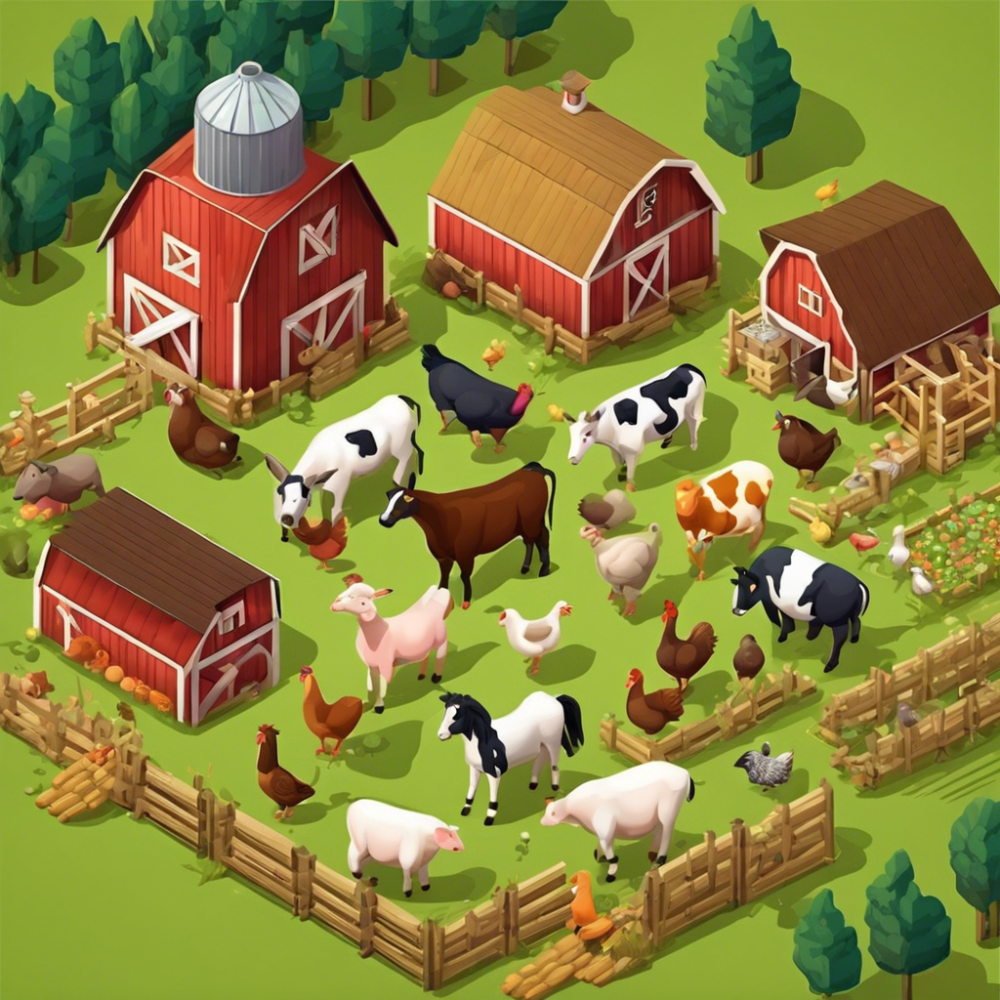
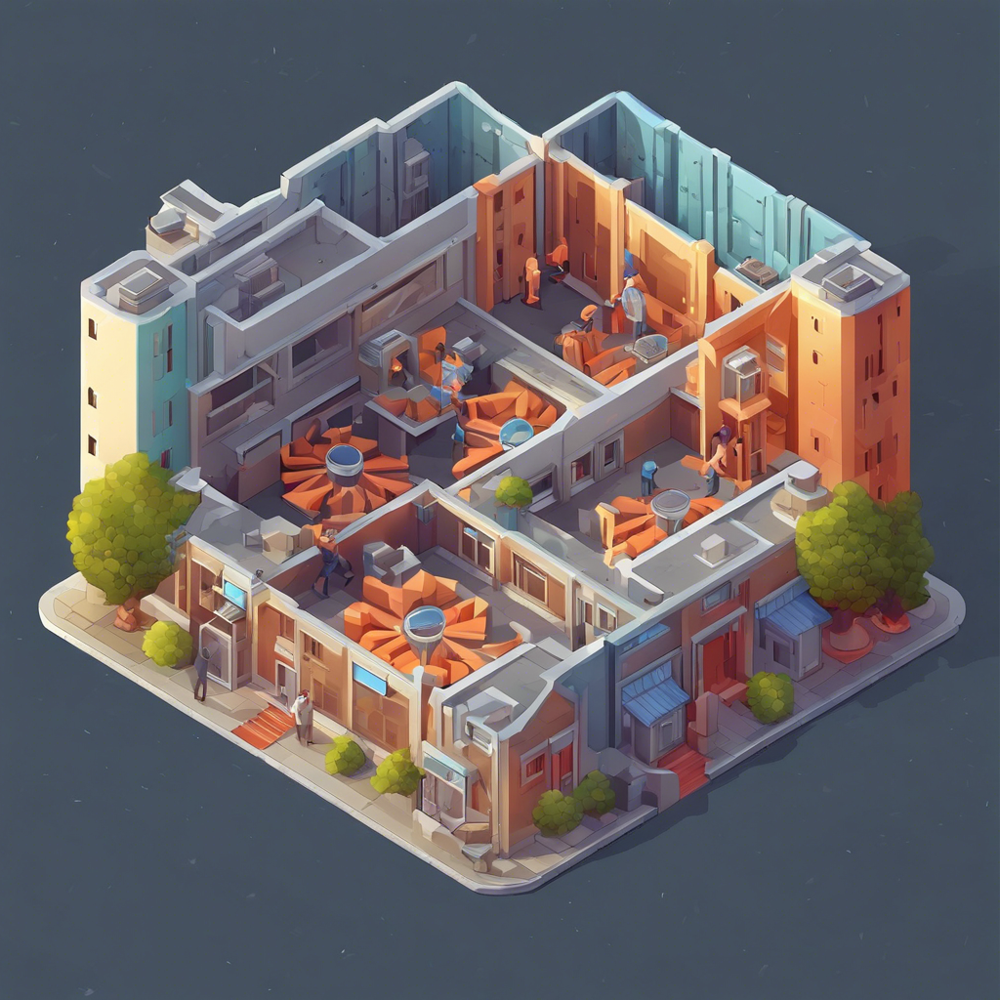

Hi! I am Utsav!!!
I'm a seasoned software engineer, working towards a computer science degree
Passionate, Hard Working and
Curious!
With a strong background and experience in software development, I'm seeking a new role that will consistently challenge me. Given my diverse experience, I'm interested in positions in full stack software engineering and game development. In addition to my enthusiasm for coding, I enjoy playing badminton in my spare time and watching various sports. I'm also fascinated by how things work and have a lot of random knowledge that I love to share with others.

Projects
Filter projects by clicking on category

Work Experience
My journey as a professional engineer
- Jun 2024 - CurrentProgramming InternXLOC, Raleigh, NCAs a programming intern, I am helping build the next version of XLOC which is a CMS application used by studios like Bethesda and Activision. I am also utilizing my skills in AWS cloud to streamline deployment methods and improving existing infrastructure.
- Dec 2023 - May 2024Graduate Student ResearcherNC State Nuclear Engineering Department, Raleigh, NCAs a software developer on the OpenPRA app, I developed the admin and user profile pages, and implemented features for creating and managing new users and invites to the application. I also began integrating role-based access control into both the frontend and backend services.
- Apr 2021 - Jul 2023Software Development Engineer - 1Makkajai, Remote, IndiaAt Makkajai, I worked as a general software engineer. As part of a small team, I was responsible for managing 8 mobile apps for iOS and Android. My daily tasks included ensuring our games were bug-free and maintaining the stability of our backend services. I also led several infrastructure improvement projects, such as deploying a new analytics server and upgrading deprecated services to the latest versions. As my responsibilities expanded, I occasionally managed and led projects to completion.
- Nov 2019 - Apr 2021Junior Cloud EngineerBrainscale, Pune (Remote), IndiaAt Brainscale, as a full stack cloud developer specializing in Microsoft Azure, I worked on various projects, with my proudest achievement being the development of a test automation framework for a multi-million dollar project using Python Behave. Additionally, I built a chatbot for querying Azure Billing Costs on Microsoft Teams and created an internal portal to analyze employee workload analytics using Power BI. During my time at Brainscale, I also became 2x Azure cloud certified and developed additional skills in customer service and customer support.
- Jul 2019 - Nov 2019Associate Software EngineerTech Mahindra Ltd, Pune, IndiaMy initial company where I gained foundational skills in software engineering. I completed training in Java, HTML, CSS, JavaScript, SQL, and more. Additionally, I became familiar with Agile development practices and participated in Scrum meetings.